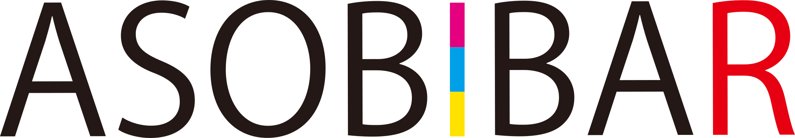

U-25100分プラン
日〜木曜限定
- 関東以外
- 2,500円
- 関東
- 3,000円

Y2K NIGHT 20262000s REPLAY
あの頃の青春、今夜再生。
01曲リクエストSONG REQUEST

カセットテープ型のリクエストカードに、聴きたい2000年代の曲を書いてスタッフへ。曲だけじゃなく、当時のMVも大画面で流れます。
イントロと映像で「これ知ってる！」が起きた瞬間から、今夜の会話が始まります。
02
懐かしい音楽も、あの頃の空気も。ASOBIBARなら、その中で遊べます。
03チェキ撮影CHEKI PHOTO
会場でチェキ撮影を実施します。
数量限定 撮影した写真は持ち帰り可能


100分間、マッチングし放題＋飲み放題。
日〜木曜限定
28歳以上の男性・月〜金曜限定
※ 表示はすべて税込・お一人様あたりの金額です。OVER28プランの金曜は関東以外3,300円／関東3,800円。どちらのプランも9月末までです。詳しい条件は公式HPをご確認ください。
料金・プランを詳しく見る↗06開催情報EVENT INFORMATION
—


 次は、
次は、


GUIDEASOBIBARの楽しみ方
ASOBIBARは、人とつながるきっかけと、同じ瞬間に笑える遊びが、同じ場所にあるお店です。覚えておくことは3つだけ。

その日の気分で色を選ぶと、それに合った遊び方をスタッフがご提案します。

ダーツ / ビリヤード / エアホッケー / 卓球 / 最新ゲーム / トランプ / ジェンガ。

女性に人気のスイーツもフードも豊富。フォトスポットとVIPルームもあります。

08予約RESERVE
LINE予約で無料フードチケットASOBIBAR TREND MENU
あの頃の曲から始まる、大人のY2Kナイトへ。
9月限定・席数限定LINE予約はこちら→